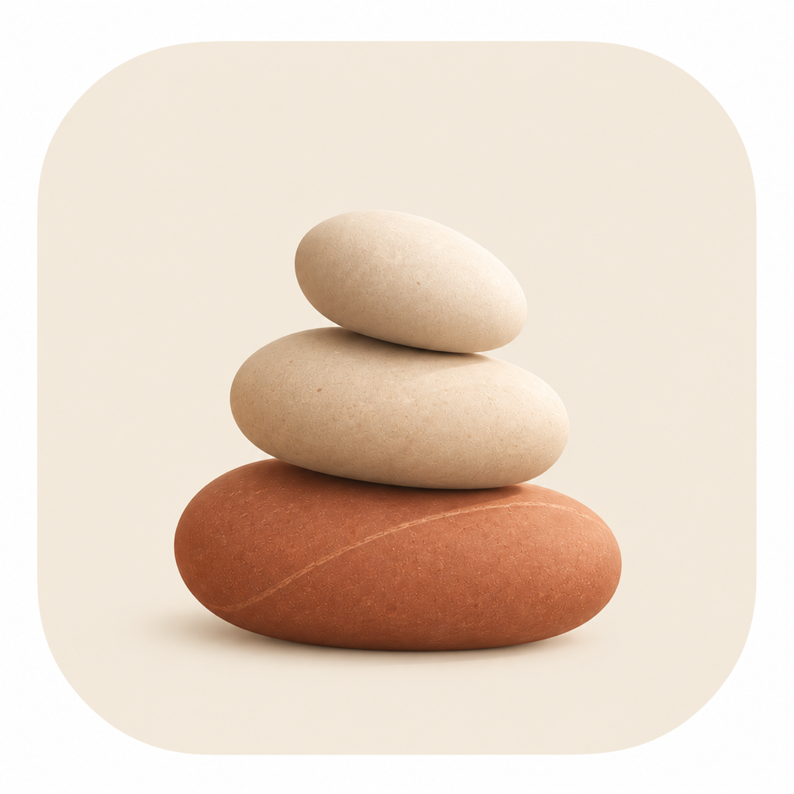

Choose your apps.
Allow Screen Time access and select apps or categories using Apple’s private system picker.
Find your footing
Let your apps wait a moment. Make time for something grounding.
Choose which apps to pause, take a little time for yourself, then come back on your terms.
Meet your next small habit ↗An iOS 17+ app · Preparing for the App Store

Your time, your choice
A gentle boundary between opening an app and giving something good your attention.
Allow Screen Time access and select apps or categories using Apple’s private system picker.
Choose one or more activities. Start a pause now, or schedule it for the days and time that suit you.
Complete every chosen activity, then tap Unlock apps. Finishing the activities doesn’t unlock them automatically.
Something grounding
Some days call for stillness. Others, a glass of water or a few pages. Choose the pause you need.
Timers run while you stay in the app. Leaving an unfinished timed activity starts it over.
A quieter kind of app
No account to create. No ads or analytics SDKs. Your app choices, schedule, and activity progress are stored on your device; Mindful Lock has no server to send them to.
Reflection text is held only while you write and cleared when you leave the activity or finish it.
Read the privacy policy ↗On your terms
Mindful Lock supports voluntary self-control. Activities are timed or self-reported, and you can revoke Screen Time access. Scheduled pauses rely on iOS to deliver their start time.
The medicine activity is only a check-in for a dose already due under your usual routine. It gives no medical or dosing advice.
Get help & answers ↗